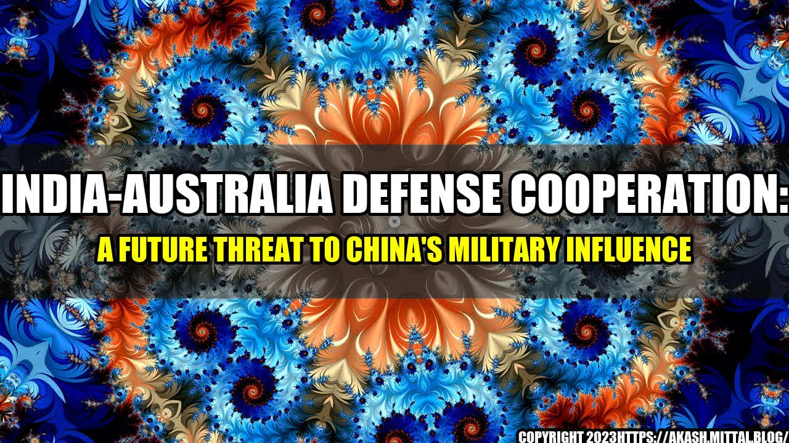

India-Australia Defense Cooperation: A Future Threat to China's Military Influence

It was the summer of 2019, when the Australian Prime Minister, Scott Morrison, met with his Indian counterpart, Narendra Modi, in New Delhi to discuss strengthening the bilateral relationship. They talked about economic cooperation, immigration, and regional security. However, what caught my attention was their discussion about defense cooperation, which they deemed crucial to counter emerging threats in the Indo-Pacific region. I started digging deeper into this topic and found out that India and Australia are increasingly partnering up to counter China's growing military influence in the region. This article explores the extent of this partnership and its potential impact on China's military strategy.
Examples of India-Australia Defense Cooperation
Before diving into the potential impact of this partnership, let's look at some quantifiable examples of defense cooperation between India and Australia:
- India and Australia conducted their first-ever joint naval exercise in the Bay of Bengal in 2015, which included working on anti-submarine warfare.
- In 2017, they held their first joint military exercise called "AUSINDEX," which involved naval and aerial drills.
- India and Australia are part of the "Quad" alliance, along with Japan and the United States, which aims to promote a free and open Indo-Pacific region and counter China's aggressive territorial claims.
- The two countries have been pushing for a "Quad Plus" format, which would include additional members such as New Zealand and South Korea, to further strengthen the alliance against China's growing influence.
- In 2020, India and Australia signed a landmark defense pact, which includes mutual access to military bases, logistics support, and up to $4.5 billion in defense deals.
The Future of India-Australia Defense Cooperation
The above examples show that India and Australia are already collaborating on several fronts to counter China's dominance in the region. However, this partnership is expected to deepen in the coming years, and here's why:
- China continues to assert its territorial claims in the South China Sea, East China Sea, and Taiwan Strait, which has rattled its neighbors. India and Australia see China's growing military influence as a direct threat to their security interests, and they are likely to increase their cooperation to balance out China's power.
- The United States under the Biden administration has signaled a renewed focus on the Indo-Pacific region and has emphasized the importance of working with allies and partners to counter China's aggression. India and Australia are likely to benefit from this renewed focus and will work closely with the US to build a stronger defense partnership.
- The COVID-19 pandemic has highlighted the need for closer cooperation among countries to tackle global challenges. India and Australia have cooperated extensively during the pandemic and are likely to continue this trend to build deeper ties in defense and other sectors.
Impact on China's Military Strategy
India and Australia's growing defense cooperation is expected to have a significant impact on China's military strategy. Here are three potential consequences:
- China's "String of Pearls" strategy aims to build a network of military and commercial facilities in the Indian Ocean region to encircle India and limit its strategic space. However, India's closer ties with Australia will help it counter this strategy by having greater access to bases and facilities in the region. This would make it harder for China to encircle India and tilt the balance of power in India's favor.
- A strong India-Australia defense partnership would also deter China from taking any aggressive actions, such as a military conflict with either country. China is known for its "salami-slicing" tactics, i.e., taking small, incremental actions to change the status quo without crossing the threshold of an all-out war. However, a strong India-Australia defense partnership would make China think twice before taking such actions and risk facing a military retaliation.
- China's Belt and Road Initiative (BRI) aims to build a network of infrastructure projects across Asia, Africa, and Europe to increase its strategic influence. However, India and Australia are among the few countries that have resisted this initiative and have pushed for alternatives, such as the "Blue Dot Network" and the "Quad Infrastructure Plan." A stronger defense partnership between India and Australia would help these countries pursue their alternative plans and reduce China's influence in the region.
Conclusion
To sum up, India-Australia defense cooperation is expected to increase in the coming years, as both countries seek to counter China's growing military influence in the Indo-Pacific region. This partnership would have a significant impact on China's military strategy, as it would make it harder for China to encircle India, deter it from taking aggressive actions, and reduce its influence in the region. It remains to be seen how China would respond to this growing partnership, but one thing is clear: the strategic landscape of the Indo-Pacific region is changing, and India and Australia are positioning themselves as front-runners in this shift.
References
- India, Australia Sign Deal for Access to Military Bases, The Diplomat, October 2020. #IndiaAustraliaDefensePact #MilitaryBasesAccess #QuadAlliance #ChinaContainment
- India, Australia, Japan, US hold 'Quad' talks, Al Jazeera, October 2020. #QuadAlliance #IndoPacificStrategy #ChinaThreat
- India, Australia agree to boost defense, trade ties, Reuters, June 2020. #IndiaAustraliaDefenseCooperation #ChinaContainment #IndoPacificRegion
Category: Defense and International Relations
Curated by Team Akash.Mittal.Blog
Share on Twitter Share on LinkedIn